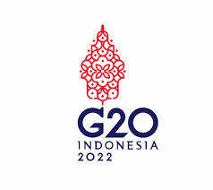
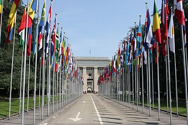
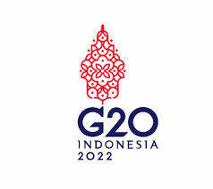
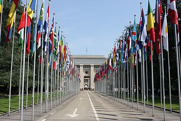

Kita adalah makhluk sosial yang tidak mungkin hidup sendiri, maka kita perlu bekerja sama dengan orang lain dalam berbagai bidang. Kerjasama itu penting, karena akan membuat yang tidak mungkin menjadi mungkin, yang berat menjadi ringan. Kerjasama akan berhasil jika pihak yang terlibat memiliki tujuan yang sama, berperan aktif dan menguntungkan semua pihak.
Kerjasama internasional sangat penting untuk membantu Indonesia mencapai tujuan pendidikan berkualitas sesuai dengan SDGs. Indonesia bekerja sama dengan berbagai negara untuk meningkatkan akses dan kualitas pendidikan, terutama di daerah terpencil. ACT membantu memperbaiki kualitas guru lewat pelatihan dan program pertukaran.
SDGs dapat membantu Indonesia dalam bidang pendidikan. Manfaat SDGs yang dapat kita rasakan adalah peningkatan fasilitas pendidikan dan kesempatan beasiswa, tetapi timbul masalah, seperti biaya pendidikan yang bisa lebih mahal dan sulitnya akses bagi keluarga yang kurang mampu.
Kerjasama internasional juga memiliki dampak negatif yang harus di waspadai seperti masuknya budaya asing yang belum tentu sesuai dengan budaya Indonesia. Kita harus bisa bersikap bijaksana dalam menghadapi dampak negatif yang ada.